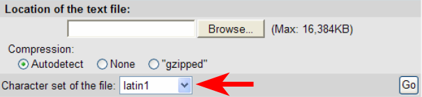
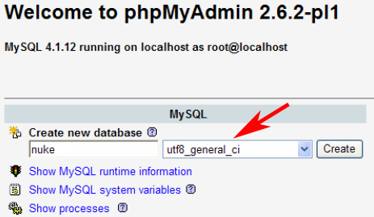

Many web applications, such as Gallery 2 use UTF-8 encoding
to display content. Others, however, such as PHPNuke use ISO-8859-1,
otherwise known as Latin-1.
Separately, this is not a problem, but when you try to integrate two applications that use different character
encodings, problems can arise, since some special characters cannot be displayed in Latin-1.
For a more in-depth discussion, see this discussion
on NukedGallery.net.
This document describes the conversion of a MySQL 4.x database for PHPNuke 7.5 from Latin-1 to UTF-8, along with
the changes that need to be made to the PHPNuke language files.
This is a "living document" that is undergoing revisions as they become available. Please back up all
data before you make any changes.
Before you begin, you need to have the following pieces of software:
There are two ways to dump your PHPNuke database. The first is to use phpMyAdmin:

The second is to use the MySQL command line:
Now, you must create a new PHPNuke database in the UTF-8 format. Again, this can be done using phpMyAdmin:
Now, you must convert your old phpNuke database to the UTF-8 format. One way to do this is to use the iconv program:
The following image shows the change from Latin-1 to UTF-8.
If you don't have the iconv binary, or this method does not work for you, you can use phpMyAdmin to do the conversion for you. For most people, the phpMyAdmin method will be easier.
You can use phpMyAdmin to import the new UTF-8 encoded database file into the UTF-8 database you created above:
Make sure that you set the "Character set of the file" to UTF-8
For those of you who can't use the iconv binary, you can also use phpMyAdmin to do the conversion for you. When you import the Latin-1 database file into the UTF-8 database you created earlier, you must change the "Character set of the file" to "Latin-1".
If you're starting with a fresh install of PHPNuke, before you run the database installation script, you must set the character set of the database to UTF-8:
Once you've finished making the required changes to the PHPNuke database, you must configure phpNuke to use the new UTF-8 encoded database. In your <nuke_root>/config.php file, change the "dbname" variable to the name of your new UTF-8 database:
Next, you must change the character set of phpNuke's language files from Latin-1 to UTF-8. The files you must change are:
In these files (and any other language files you use), make the following change:
If possible, edit the httpd.conf file for your Apache webserver:
If your language has special characters, such as an umlaute, you must further edit your language files to use the special HTML entities for the characters. You can find an entity table for your language at http://www.unicode.org/charts/.
You can use an editor such as UltraEdit or EditPlus to do a global search and replace in the language files:

In this example, we are replacing the Ö character with it's HTML entity Ö.
To check and make sure that all your changes have worked, view your newly converted website in your web browser and see what type of encoding the web browser uses.
In Internet Explorer:

In Mozilla Firefox:
The original PDF of this document was written by Frank Ulbrich (http:// www.frank-ulbrich.de http://ulbrich.homelinux.com).
The PDF was converted to HTML by Dariush Molavi (http://www.nukedgallery.net).
$Id$